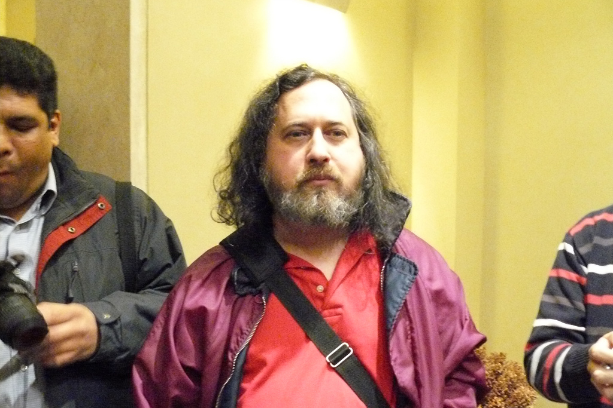
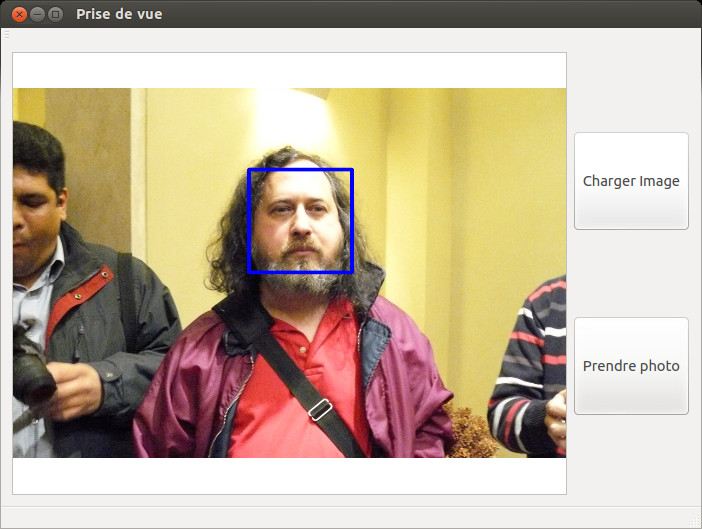
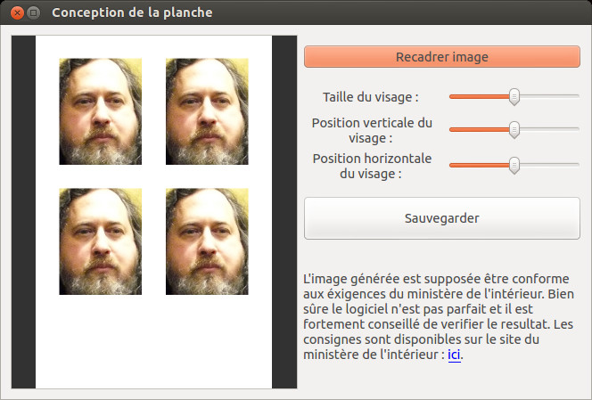
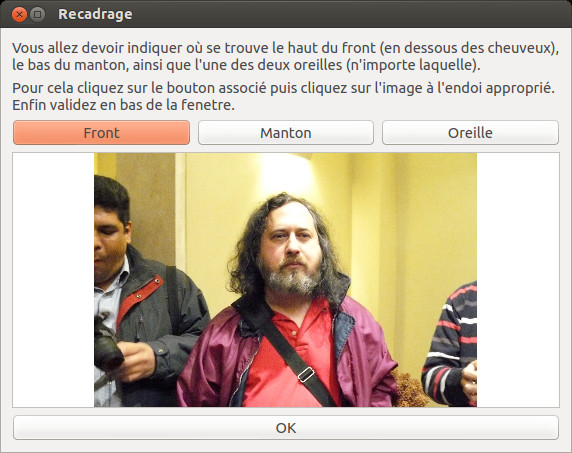
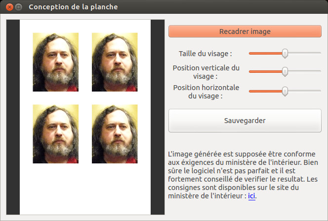
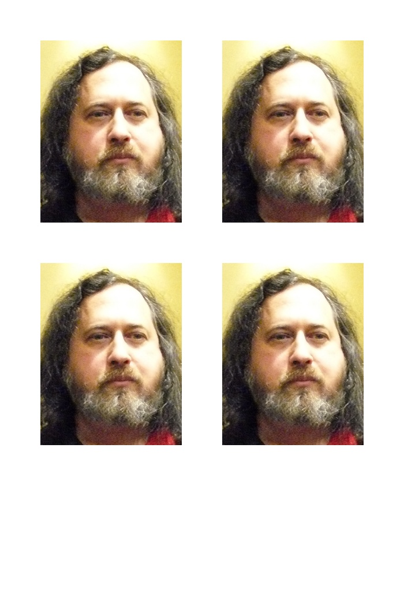

Créez vos planches de photos d'identité chez vous.
Ce logiciel vous permettra de créer vos propres planches de photos d'identité soit en prenant une photo avec votre webcam, soit en important une photo de vous. Le résultat doit être conforme aux recommandations du ministère de l'intérieur français (vérifiez quand même que tout concorde).
Pour expliquer l'utilisation de ce logiciel, nous allons faire une planche de photos d'identité à partir de cette photo de Richard Stallman (prise par pablojcoloma, disponible ici).
Une fois le logiciel installé et lancé vous aurez une fenêtre qui vous affichera l'image de votre webcam et deux boutons sur la droite. "charger image" permet d'aller chercher une image sur le disque dur et de l'utiliser. Ainsi vous pouvez prendre une belle photo avec un appareil photo digne de ce nom. À défaut vous pouvez utiliser votre webcam. Pour cela vous pouvez appuyer sur le bouton "Prendre photo" quand vous voulez.
Dans notre cas nous allons importer l'image que nous avons. Vous constaterez que le logiciel dessine un rectangle bleu autour du visage de la personne. Cela n'est pas définitif, il sera possible de le redéfinir par la suite s'il n'est pas correct.
À cet instant une nouvelle fenêtre apparaît avec des contrôles sur le côté droit. De haut en bas nous avons :
Il faut noter que les planches générées sont supposées respecter les consignes du ministère de l'intérieur français, mais bien sûr rien n'est garantie. Il est fortement conseillé de vérifier si la planche que vous générez respecte toutes les conditions. Ces conditions sont disponibles ici.
Ainsi ici cette planche ne respecte pas tous les critères, en effet le visage n'est pas dirigé vers l'objectif par exemple.
Cependant je trouve que le visage prend beaucoup de place sur la photo. J'aimerais qu'il y ait un peu plus d'espace autour. Nous allons donc redéfinir la position du visage en cliquant sur le premier bouton.
Nous arrivons dans une nouvelle fenêtre où nous allons spécifier trois points du visage. Pour cela il faudra cliquer sur le bouton associé à la partie du visage puis cliquer sur l'image où nous voulons la poser. Il va falloir faire cela pour le haut du front (à la base des cheveux), le bas du menton et le bout d'une oreille (n'importe laquelle).
Puis enfin nous validons avec le bouton OK en bas de la fenêtre. Nous sommes de nouveau dans la fenêtre de conception de la planche et cette fois ci les photos semblent plus présentables. Nous allons donc pouvoir sauvegarder en cliquant sur le bouton "Sauvegarder".
Nous obtenons le résultat suivant :
Pour installer ce logiciel récupérez l'installateur correspondant à votre système.
| OS | ||
| ubuntu 16.04 | ||
| windows | ||
Une fois le paquet approprié récupéré, vous pouvez l'installer en double cliquant dessus (ce qui ouvrira normalement un gestionnaire de paquets) ou avec la commande :
$ sudo dpkg -i chemin/vers/le/fichier/téléchargéIl suffit de double cliquer dessus et de suivre les instructions.
Vous pouvez télécharger les sources de l'application directement sur github (bouton en haut à gauche de la page) ou en téléchargement directement l'archive en tar. Pour le compiler vous aurez besoin d'avoir installé opencv et QT4 au préalable.
En cas de problème, ou si vous avez une suggestion n'hésitez pas à me contacter, ma fiche github est ici.